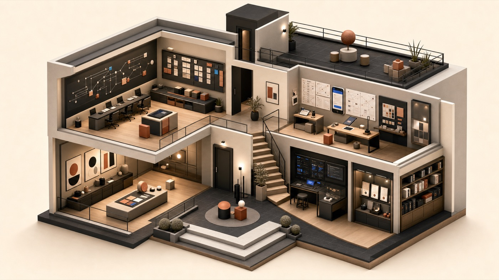

Cette pièce naît des projets où il fallait remettre de l’ordre dans le mouvement : équipes, délais, outils, responsabilités et décisions.
Construction 3D…

Explorer l’espace
01 / Bureau de pilotage
Gestion & transformation digitale
Je transforme des objectifs complexes en responsabilités lisibles, workflows pilotables et livraisons concrètes.
ImmersionTableaux noirs, notes en mouvement, lumière chaude de salle projet.
Pilotage de workflow : transformer un objectif flou en séquence claire, assignable et mesurable.
01JDIS — Digital SystemProduit & logistique
02Workflows opérationnelsGouvernance · Coordination